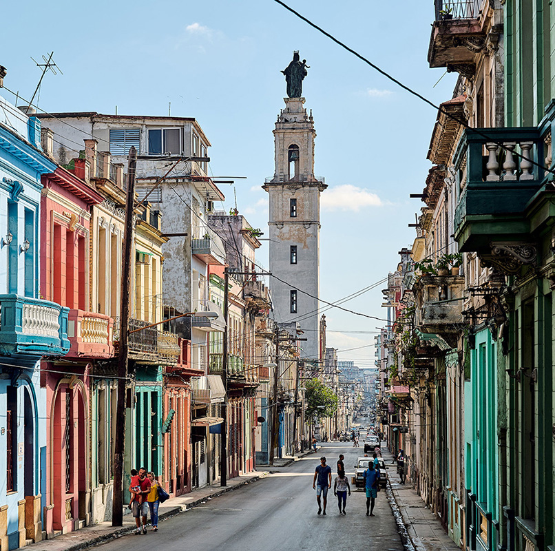
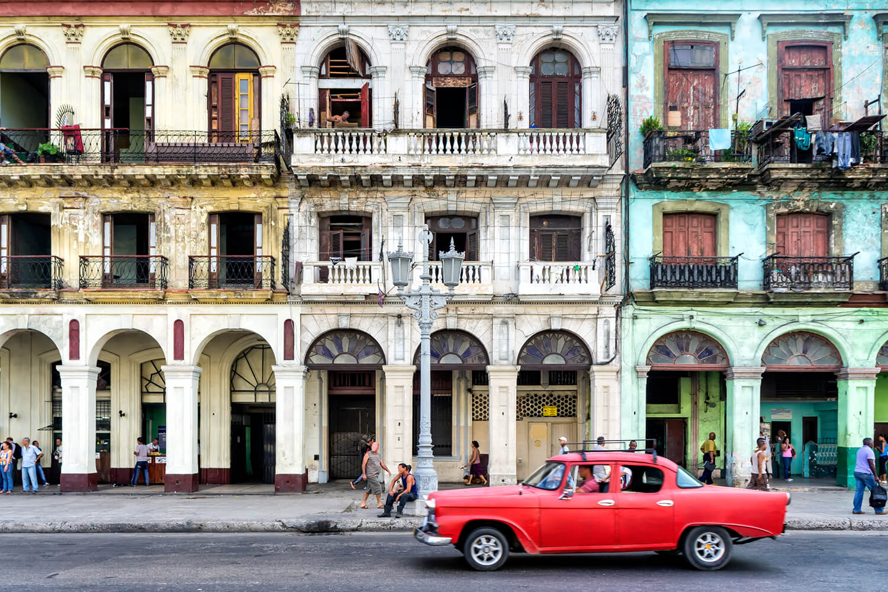
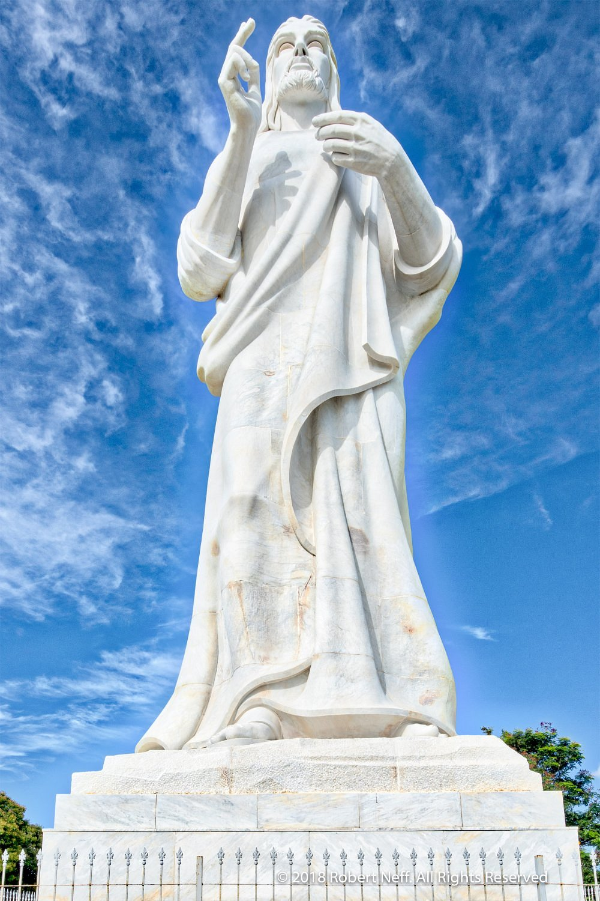
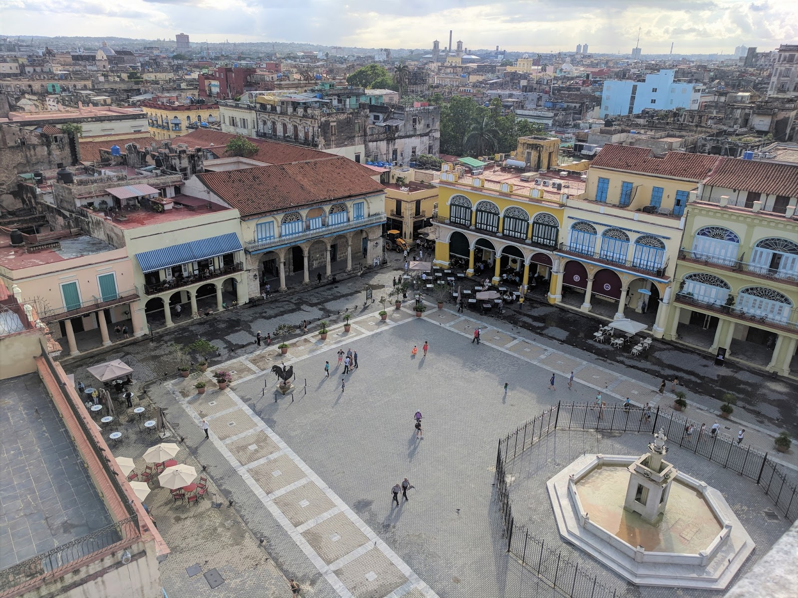
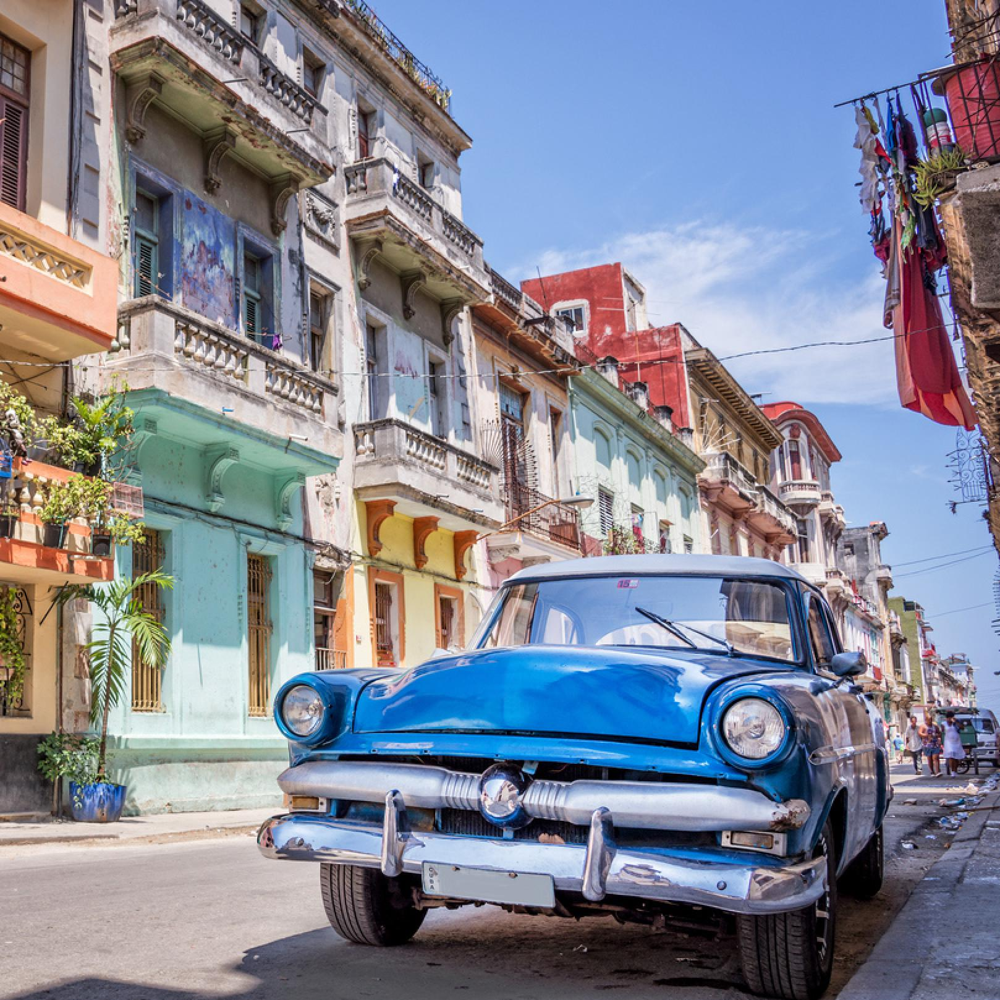
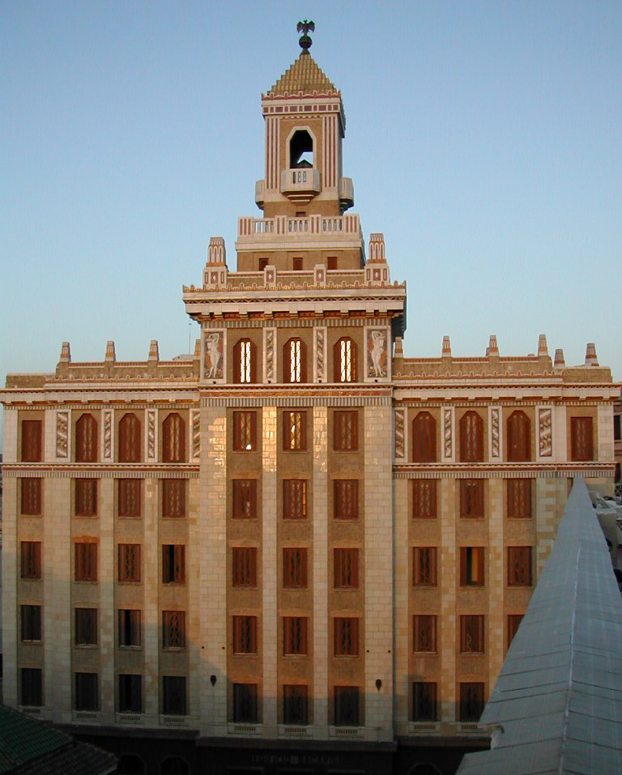
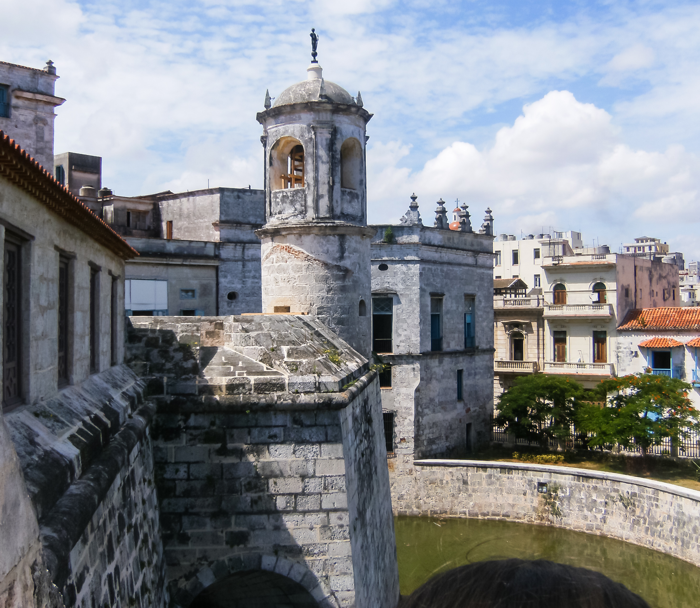

Step into a storybook of styles as you explore Cuba’s stunning architecture, where centuries of culture meet in every arch and avenue. Wander Old Havana’s cobblestone streets surrounded by vibrant Spanish colonial facades, now UNESCO-protected and brimming with character. Marvel at Baroque churches, Neoclassical mansions, and Art Deco gems that speak to Cuba’s cosmopolitan past and revolutionary spirit.
Each neighborhood offers something unique—Trinidad’s pastel houses echo the 19th century sugar boom, while Havana’s Malecón is framed by a colorful mix of crumbling grandeur and modern vitality. Guided walking tours and local restoration projects invite travelers to experience not just the beauty, but the resilience behind these structures.
In Cuba, architecture doesn’t stand still—it sings, dances, and tells its story. Let the walls talk.

Urban Elegance of Timeless Architecture
Step into a living museum of design where Spanish colonial charm meets Caribbean flair. In cities like Havana, Trinidad, and Cienfuegos, pastel-hued facades, wrought-iron balconies, and grand archways tell stories of centuries past. Explore UNESCO-listed Old Havana, where cobblestone streets lead to Baroque cathedrals and Neoclassical mansions—each one a masterpiece of resilience and beauty.

Monuments of History and Revolution
Cuba’s monuments are more than stone and bronze—they’re chapters of a nation’s soul. Visit the towering José Martí Memorial in Havana’s Plaza de la Revolución, or pay tribute at the Che Guevara Mausoleum in Santa Clara. From colonial fortresses like El Morro Castle to modern tributes like Cristo de La Habana, each landmark invites reflection and awe.

Precious Plazas
Cuba’s plazas are the heartbeats of its cities. In Plaza Vieja, Havana’s architectural kaleidoscope surrounds lively cafés and art galleries. Plaza de la Catedral stuns with its Baroque cathedral and colonial mansions, while Plaza de Armas offers leafy respite and a bustling book market. These squares aren’t just scenic—they’re stages for daily Cuban life.

Carros Clásicos
Though not technically a part of the island's architecture in a traditional sense, nowhere else in the world will you find streets lined with 1950s Chevrolets, Buicks, and Fords in dazzling colors. These vintage beauties aren’t just for show—they’re an integral part of Cuba’s identity. Take a ride in a convertible along Havana’s Malecón or book a guided tour through Viñales in a cherry-red Bel Air. Cuba’s classic cars are a tribute to ingenuity, nostalgia, and style.

Modernist Magnificence
Beyond colonial charm, Cuba surprises with bold 20th-century design. Admire the Bacardi Building, a gleaming Art Deco gem in Havana, or explore the National Theatre of Cuba, where neoclassical grandeur meets cultural vibrancy. These structures reflect Cuba’s cosmopolitan past and its creative present.

Guardians of the Caribbean
Cuba’s coastline is dotted with formidable fortresses built to defend against pirates and invaders. Explore Castillo de la Real Fuerza, one of the oldest stone forts in the Americas, or climb the ramparts of La Cabaña, a sprawling stronghold overlooking Havana Bay. These sites blend architectural might with panoramic views.

Filter the Cultural Experience
Explore the Knowledge Graph
Visualize the relationships between cities and landmarks in Cuba.